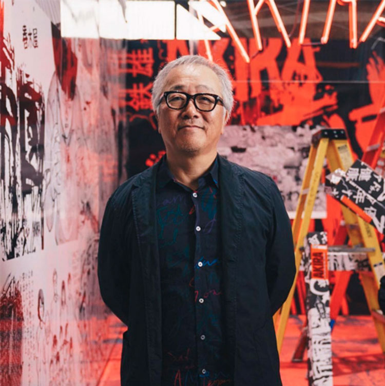
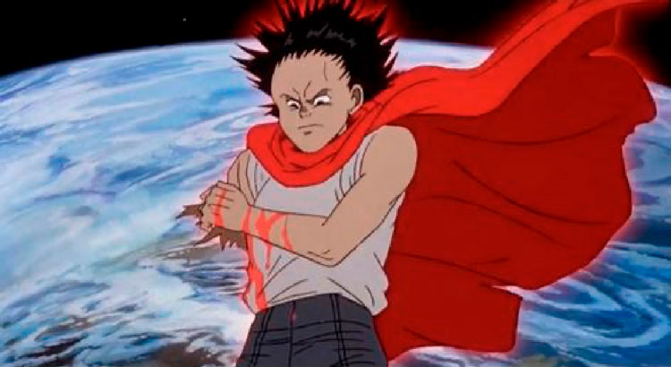

COMPOSITEUR
TSUTOMU ŌHASHI EST UN ARTISTE SCIENTIFIQUE JAPONAIS IL EST ÉGALEMENT
CONNU SOUS SON PSEUDONYME SHOJI YAMASHIRO, IL EST NÉE LE 14 MARS
1933 À TOCHIGI AU JAPON.
EN 1974, IL FONDE LE GEINOH YAMASHIROGUMI, UN COLLECTIF MUSICALE
JAPONAIS QUI EST COMPOSÉ DE CENTAINES DE PERSONNES.
IL EST LE COMPOSITEUR ET DIRIGEANT DE LA PARTITION DU CÉLÈBRE FILM
AKIRA DE 1988
RÉALISATEUR

KATSUHIRO ŌTOMO AU HYPERFEST EN OCTOBRE 2018 À BROOKLYN, NEW YORK
DE KATSUHIRO ŌTOMO
SYPNOSIS
2019, NÉO-TOKYO, SUITE À LA DESTRUCTION DE LA CAPITALE IL Y A 30 ANS
PAR UNE EXPLOSION NUCLÉAIRE, LA VILLE S'EST PEU À PEU RECONSTRUITE
MAIS LA VILLE N'EST PLUS QU'UN MÉGAPOLE POSTAPOCALYPTIQUE, DIRIGÉE
PAR UNE ARMÉE RÉPRESSIVE ET DES POLITICIENS CORROMPUS, AVEC DES RUES
PEUPLÉES DE DÉPRAVÉS ET DE DROGUÉS ET UNE BANDE DE MOTARD DONT LE CHEF
S'APPELLE KANEDA.
TETSUO QUI FAIT PARTIE DE CETTE BANDE, DEVIENT LA VICTIME D'EXPERIENCE
VISANT À DÉVELOPPER LES CAPACITÉS PSYCHIQUES QUI DORMENT EN CHACUN DE
NOUS.
IL EST AINSI DOTÉ D'UNE PUISSANCE ET DÉCIDE DONC DE PARTIR EN GUERRE
CONTRE LE MONDE QUI L'A OPPRIMÉ.
IL SE RETROUVE AU COEUR D'UNE LÉGENDE POPULAIRE QUI ANNONCE LE RETOUR
D'AKIRA, UN ENFANT AU POUVOIRS EXTRA-ORDINAIRES CENSÉ DÉLIVRER TOKYO
DU CHAOS

MUSIQUE
KANEDA'S THEME (AKIRA) - SHOJI YAMASHIRO (AKA TSUTOMU ŌHASHI)
LA MUSIQUE TRÈS PARTICULIÈRE DE SHOJI YAMASHIRO (TSUTOMU ŌHASHI) UN
PEU ÉTRANGE ET DÉCALÉE MAIS QUI RÉUSSI BIEN SUR LES IMAGES DE CE FILM
D'ANIMATION JAPONAIS.
C'EST UN TRAVAIL TRÈS IMPRESSIONANT ÉFFECTUÉ SUR LE SON ELLE CONTRIBUE
À LA CONSTRUCTION DE L'ATMOSPHÈRE À LA FOIS MORBIDE ET FASCINANTE
DE L'OEUVRE, ELLE PORTE LES IMAGES ET ACCOMPAGNE LES PERSONNAGES.
ON EST DANS UN CADRE-APOCALYPTIQUE ET CYBER-PUNK DU NEO-TOKYO D'AKIRA,
LA VIOLENCE DES TAMBOURS ET LES CHANTS SECTAIRES DÉCRIVE UNE
COMMUNAUTÉ HUMAINE EN QUÊTE D'UN LEADER SPIRITUEL.
C'EST UNE MUSIQUE ABSOLUMENT UNIQUE ET ATYPIQUE, LE STYLE MÈLE UN SON
TRIBAL À DE LA MUSIQUE TRADITIONNNELLE JAPONAISE.